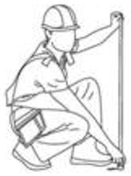

Vivienda Progresiva
PróximamenteUn modelo de vivienda pensado para crecer: arranca en 18 m² y se puede ampliar a 36 m² o más, con preinstalaciones para que la familia mejore la casa con sus propios recursos con el tiempo. Más del 50% de las familias invierte en mejorar su vivienda dentro de los primeros meses.

Esta página la completa quien esté a cargo de Vivienda Progresiva, con fotos y el guion final.